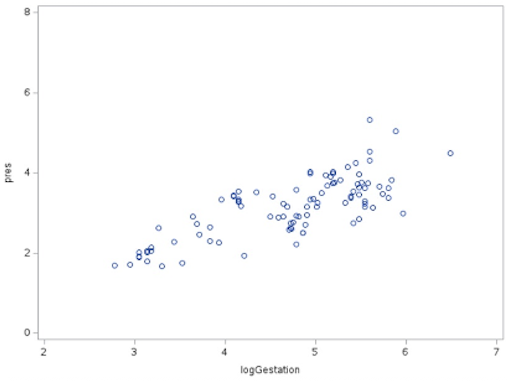

Model Selection and Validation
Objectives
- Describe the proper order for a regression analysis.
- Use residuals to check regression assumptions.
- Apply the necessary remedies when the assumptions are violated.
- Apply variable selection algorithms and interpret the results.
- Understand statistical and conceptual issues for automatic variable selection in multiple linear regression.
Parameter estimates are highly context dependent.
- The magnitude of a correlation coefficient can vary depending on factors such as:
- The range of values observed for the variables.
- The precision and reliability of the measurement instruments or techniques.
- The characteristics of the units being studied.
- A specific slope estimate in a regression model can be affected by:
- The range of \(x\) and \(y\) values in the data.
- The characteristics of the units or cases in the sample.
- The context provided by the specific set of predictor variables included in the model.
- Example: A tentative model for alcohol metabolism in men and women should:
- Contain variables whose values best answer the research questions in a straightforward manner.
- Include potentially confounding variables.
- Include features that capture important relationships found in the initial graphical analysis (e.g., variables that are highly correlated with the response in a scatterplot matrix).
Inferences on Partial Slopes
- Examine individual tests for each slope in the model to determine statistical significance.
- Variables may be excluded if the slope is not statistically significant, but check for potential collinearity before removal (see Collinearity and Variance Inflation Factor section).
First-Pass Model
- Look for variables that are not statistically significant. These could be three-way interactions, two-way interactions, or single variables.
- Before removing a variable, check its Variance Inflation Factor (VIF) (see Collinearity and Variance Inflation Factor section) to see if it is highly correlated with others.
- Investigate further with a partial residual plot.
- Fit the model with \(x_1\) and \(x_2\).
- Calculate partial residuals for \(x_2\):
\[ \text{p}_{\text{res}} = y - \left(\hat{\beta}_0 + \hat{\beta}_1 x_1\right) \]
where \(\hat{\beta}_0\) and \(\hat{\beta}_1\) are estimated from the model fit with both \(x_1\) and \(x_2\). - Create a new dataset with \(\text{p}_{\text{res}}\) as the response and \(x_2\) as the predictor.
- Fit a simple linear regression of \(\text{p}_{\text{res}}\) on \(x_2\) to assess the relationship.
If the plot looks linear, keep \(x_2\); if not, consider removing it.
To create the dataset for the simple linear regression of \(\text{p}_{\text{res}}\) on \(x_2\):
- Fit the full multiple linear regression model with \(x_1\) and \(x_2\):
\[ y = \beta_0 + \beta_1 x_1 + \beta_2 x_2 + \varepsilon \] - Compute partial residuals for \(x_2\):
\[ \text{p}_{\text{res}} = y - \hat{\beta}_0 - \hat{\beta}_1 x_1 \] - Form a new dataset:
- Response: \(\text{p}_{\text{res}}\)
- Predictor: \(x_2\)
- Fit a simple linear regression of \(\text{p}_{\text{res}}\) on \(x_2\):
\[ \text{p}_{\text{res}} = \beta_0 + \beta_1 x_2 + \varepsilon \]
The slope from this regression should match the \(\hat{\beta}_2\) from the full model.
Example: Partial Residuals — Mammal Brain Data
We want to understand what is happening after accounting for another variable.
Suppose we fit the multiple linear regression model:
\[
\mu(\text{logBrain} \mid \text{logBody}, \text{logGest}) = \beta_0 + \beta_1 \text{logBody} + \beta_2 \text{logGest}.
\] To examine the partial effect of logGest, we remove the variation explained by logBody:
\[ \mu(\text{logBrain} \mid \text{logBody}, \text{logGest}) = \beta_0 + \beta_1 \text{logBody} + f(\text{logGest}), \]
which can be rewritten as:
\[ f(\text{logGest}) = \mu(\text{logBrain} \mid \text{logBody}, \text{logGest}) - (\beta_0 + \beta_1 \text{logBody}). \]
We estimate this by looking at the residuals:
\[ \text{p}_{\text{res}} = \text{logBrain} - \beta_0 - \beta_1 \text{logBody}. \]
Here, \(\text{p}_{\text{res}}\) represents what is left after we take out the effect with respect to body size.
Parameter estimates for the full model:
| Variable | DF | Parameter Estimate | Standard Error | t Value | Pr > |t| |
|---|---|---|---|---|---|
| Intercept | 1 | -0.4573 | 0.4585 | -1.00 | 0.3212 |
| logGest | 1 | 0.6678 | 0.1088 | 6.14 | <0.0001 |
| logBody | 1 | 0.5512 | 0.0324 | 17.03 | <0.0001 |
The partial residuals are computed as:
\[ \text{p}_{\text{res}} = \text{logBrain} - (-0.4573) - 0.5512(\text{logBody}). \]
Forming the SLR dataset:
- Response variable: \(\text{p}_{\text{res}}\) (one value per observation, from the above formula)
- Predictor variable:
logGest(same values as in the original dataset)
We then fit a SLR of \(\text{p}_{\text{res}}\) on logGest:
\[ \text{p}_{\text{res}} = \beta_0 + \beta_1(\text{logGest}). \]
Parameter estimates for the SLR:
| Variable | DF | Parameter Estimate | Standard Error | t Value | Pr > |t| |
|---|---|---|---|---|---|
| Intercept | 1 | 0.00005 | 0.2767 | 0.00 | 0.9999 |
| logGest | 1 | 0.6678 | 0.0578 | 11.56 | <0.0001 |
This shows that the information in the partial residuals can be explained by logGest.

logGest. This plot shows the relationship between logGest and the residual variation in logBrain after accounting for logBody.Dealing With Outliers
- Least squares is not resistant to outliers.
- A robust regression procedure is useful when extreme values in the response variable (outliers) are still a problem, even after trying common remedies such as transformations, removing data entry errors, or using weighted least squares. Robust methods reduce the influence of these outliers on the fitted model.
- If using least squares, examine outliers and influential points:
- Are the suspect observations influential, and why?
- Do they provide interesting information about the process under study?
Guidelines
- If the observation differs from the rest of the data in a sparsely represented region (i.e., not many values of \(y\) measured for a range of \(x\) values), restrict the range.
- Those few points will influence the regression.
- Document that the range was restricted and explain why.
- If the observation is not unusual and no other explanation can be found, do not omit it. Report results with and without the observation.
- If there is strong reason to believe that the case belongs to a different population, omit it.
- If there is no reason to believe it belongs to a different population, consider whether anything can be learned from it. A rare value can reveal information that would have otherwise been overlooked.
Identifying Influential Cases
- Outlier influence can be tested with measurements that use the “leave one out” strategy. A large change after leaving one case out means that case is influential.
- DFFITS (difference in the fits): Measures the difference in fitted values for the \(i\)th case when all \(n\) cases are used versus when the \(i\)th case is excluded.
\[ \text{DFFITS}_i = \frac{\hat{Y}_i - \hat{Y}_{i(i)}}{\sqrt{\text{MSE} \cdot h_{ii}}} \]
where \(h_{ii}\) is the leverage statistic. There is an alternate calculation that relates it to the studentized residual. - DFBETAS (difference in the betas): Measures the difference in slopes when all \(n\) cases are used versus when the \(i\)th case is excluded.
- Cook’s distance (Cook’s \(D\)): Measures the distance of the outlier and leverage at the same time (joint influence).
- Plot \(D_i\) to identify large values.
- Removing an influential point may have little effect because there may be another influential point nearby. This could also worsen the fit if there is another influential point on the opposite side.
- High VIF may be due to influential points (see Collinearity and Variance Inflation Factor section). Check before removing variables.
- DFFITS (difference in the fits): Measures the difference in fitted values for the \(i\)th case when all \(n\) cases are used versus when the \(i\)th case is excluded.
- Covariance ratio: If the covariance ratio \(> 1 + (3k/n)\), deleting the observation adversely affects the accuracy of at least one of the parameter estimates.
Testing Slopes for Statistical Significance
- A key assumption in regression is that the explanatory variables (terms in the model) sufficiently describe the process under study.
- It is misleading to omit important variables or include terms that are not needed.
- The goal is to find the smallest model that adequately explains the relationship and includes all important predictors.
Strategies
- Examine the data for outliers and influential observations, and decide whether to include them.
- Use partial residual plots to assess linearity for each term. Remove terms that do not have a linear relationship with the response.
- Keep in mind that removing a non-statistically significant term can change the significance of other terms.
- Remove nuisance variables, terms that do not help answer the research questions.
- Check model diagnostics after each change.
Strategies for Numerous Outliers or Nonconstant Variance
- Weighted least squares (WLS) assigns less weight to observations with higher variance, so less precise measurements influence the fit less.
- Measurement error models are appropriate when both \(X\) and \(Y\) are measured with error. This is generally not a concern if the purpose of the model is prediction.
Collinearity and Variance Inflation Factor (VIF)
Some explanatory variables can be well explained by other explanatory variables in the model, making them redundant.
Collinearity occurs when two or more explanatory variables are highly correlated, making it difficult to estimate their individual effects in a regression model. When collinearity is present:
- Regression coefficients can become unstable.
- Standard errors inflate, reducing statistical power.
- t-tests may show predictors as non-significant even if they are important.
- Small changes in the data can cause large swings in estimated coefficients.
- It can be hard to determine which predictors are truly important.
Why it matters:
- Inflated standard errors make it harder to detect real effects.
- Can lead to misleading or counterintuitive coefficient signs.
- May mask or exaggerate relationships.
Detecting collinearity:
- Variance Inflation Factor (VIF):
- Measures how well a variable can be predicted by all other variables in the model.
- An \(R^2\) value close to 1 means the variable is largely explained by others and may be statistically redundant; a small \(R^2\) means it is not well predicted and is more likely to add unique information.
- For predictor \(X_j\): \[ \text{VIF}_j = \frac{1}{1 - R_j^2} \] where \(R_j^2\) comes from regressing \(X_j\) on all other predictors.
- Interpretation:
- \(\text{VIF} = 1\): No correlation with other predictors.
- \(\text{VIF} > 5\): Moderate concern.
- \(\text{VIF} > 10\): Serious concern.
- \(\text{VIF} = 1\): No correlation with other predictors.
- A high VIF means \(X_j\) is highly correlated with other predictors and may not add new statistical information, though subject-matter considerations should guide the decision to keep or remove it.
- Measures how well a variable can be predicted by all other variables in the model.
- Partial residual plots:
- Visual method for checking whether a predictor still has an independent relationship with the response after accounting for others.
- Can reveal whether a predictor’s relationship is obscured by collinearity.
- Visual method for checking whether a predictor still has an independent relationship with the response after accounting for others.
Addressing collinearity:
- Remove or combine correlated predictors.
- Reconsider the model in light of subject-matter knowledge.
- Other techniques, such as penalized regression, will be discussed later in Part 2 of the book.
Proving Causality
- Causality can be established only in randomized experiments.
- A well-fitting regression model with a high \(R^2\) value demonstrates association, not causation. Important variables may still be missing from the model.
Guidelines for Putting It Together
When building and evaluating a model:
- Plot the data (e.g., scatterplots, boxplots) to understand relationships and detect anomalies.
- Develop tentative models that:
- Address the questions of interest (QOIs).
- Account for potential confounders and important relationships identified in exploratory analysis.
- Fit the model using the selected explanatory variables.
- Evaluate model fit (if applicable):
- Check residual plots for constant variance, normality, and zero mean.
- Identify influential observations (e.g., Cook’s \(D\)).
- Refine the model:
- Consider transformations or interaction terms.
- Remove unnecessary predictors if justified.
- Ensure final model addresses the QOIs.
Example: Alcohol Metabolism — First-Pass Metabolism
First-pass metabolism is the reduction in alcohol reaching the bloodstream after oral ingestion due to metabolism in the stomach lining and liver before entering systemic circulation.
In this study, it is estimated as the difference in alcohol levels between intravenous (IV) and oral administration.
This study compares oral and IV alcohol administration, focusing on gastric alcohol dehydrogenase (AD) activity.
Questions of Interest (QOIs)
- Compare levels of first-pass metabolism for men vs. women.
- Test whether men have greater AD activity.
- Explore whether alcoholism is related to differences in gastric AD activity.
Tentative Models
Full model:
\[
\begin{aligned}
\text{metab} &= \beta_0 + \beta_1 \text{Gastr} + \beta_2 \text{Gender} + \beta_3 \text{Alc} \\
&\quad + \beta_4 (\text{Gender} \times \text{Alc}) + \beta_5 (\text{Gender} \times \text{Gastr}) + \beta_6 (\text{Alc} \times \text{Gastr}) \\
&\quad + \beta_7 (\text{Gender} \times \text{Alc} \times \text{Gastr})
\end{aligned}
\]
- metab = first-pass metabolism (IV – oral)
- Gastr = gastric AD activity level (continuous)
- Gender = male or female
- Alc = alcoholic (yes or no)
QOI 3: Is Alcoholism Complicating the Answer?
We test whether alcohol-related variables jointly contribute to the model using the Extra Sum of Squares approach.
Full model: Same as above.
Reduced Model: \[ \text{metab} = \beta_0 + \beta_1 \text{Gastr} + \beta_2 \text{Gender} + \beta_5 (\text{Gender} \times \text{Gastr}) \]
ANOVA Results — Full Model
| Source | DF | Sum of Squares | Mean Square | F Value | Pr > F |
|---|---|---|---|---|---|
| Model | 7 | 42.3502 | 6.0500 | 6.83 | 0.0002 |
| Error | 22 | 19.4835 | 0.8856 | ||
| Corrected Total | 29 | 61.8337 |
ANOVA Results — Reduced Model
| Source | DF | Sum of Squares | Mean Square | F Value | Pr > F |
|---|---|---|---|---|---|
| Model | 3 | 41.6101 | 13.8700 | 17.83 | <0.0001 |
| Error | 26 | 20.2236 | 0.7778 | ||
| Corrected Total | 29 | 61.8337 |
Extra Sum of Squares Calculation
| Source | DF | SS | MS | F | p-value |
|---|---|---|---|---|---|
| Model | 4 | 0.74 | 0.185 | 0.209 | 0.93 |
| Error | 22 | 19.48 | 0.885 | ||
| Total | 26 | 20.22 |
Note: Model fit was restricted to a narrowed range of gastric levels {0, 3}.
Interpretation:
- The Extra Sum of Squares test for the alcohol-related variables (
Alcand its interactions) shows no significant improvement in model fit (p = 0.93).
- After accounting for
GenderandGastr, alcoholism status does not meaningfully explain additional variation inmetab.
- In QOI 2, we can simplify the model by removing the alcohol-related terms, focusing only on
Gender,Gastr, and their interaction.
- This simplification reduces the number of predictors and increases the degrees of freedom for estimating error, which can improve the stability of the parameter estimates in QOI 2.
QOI 2: Do Men Have More AD Than Women?
Because no enzyme = no metabolism, we use a regression through the origin by setting \(\beta_0 = 0\):
\[ \text{metab} = \beta_1 \text{Gastr} + \beta_2 \text{Gender} + \beta_5 (\text{Gender} \times \text{Gastr}) \]
Reference category: male
Parameter Estimates
| Variable | DF | Parameter Estimate | Standard Error | t Value | Pr > |t| |
|---|---|---|---|---|---|
| Gastr | 1 | 1.5989 | 0.1249 | 12.80 | <0.0001 |
| Gender | 1 | -0.8732 | 0.1740 | -5.02 | <0.0001 |
Interpretation:
- Slope for males: \(\beta_1 = 1.5989\)
- Slope for females: \(\beta_1 + \beta_3 = 1.5989 - 0.8732 = 0.7257\)
- The change in metabolism for females for a 1-unit increase in AD is 0.87 units lower than for males (p < 0.0001).
- The male slope is about 2.2 times higher than the female slope (\(\text{ratio of slopes} = 1.5989 / 0.7257 \approx 2.2\)).
- If males have more AD than females, this greater slope per unit of AD explains their higher first-pass metabolism.
Variable Selection
- Unrelated or “garbage” predictors can inflate \(R^2\), creating a false impression of predictive accuracy.
- The challenge is determining which predictors to include.
- Adding or removing variables can change the estimated effects of other variables, sometimes in unexpected ways.
Automatic Variable Selection Techniques
- Common methods include:
- Forward selection.
- Backward elimination.
- Stepwise regression.
- These methods may produce the same model or different ones.
- Model choice should consider:
- Statistical measures (e.g., \(R^2\)).
- Model diagnostics for influential points or variables.
- Whether the included variables make conceptual sense.
Forward Selection
- Process:
- Begin with no predictors in the model.
- Fit simple linear regressions (SLRs) for each potential predictor.
- Add the predictor with the smallest p-value if it is statistically significant.
- Repeat by adding the next most significant predictor.
- Continue until \(R^2\) does not increase significantly.
- Pros:
- Easy to compute and understand.
- Can be used even when \(n < k\) (sample size < predictors).
- Cons:
- A poor first choice can lead to a suboptimal final model.
- May select predictors that are only significant in the absence of others.
- Does not guarantee the best subset.
- No check for collinearity—collinear variables may enter randomly.
Backward Elimination
- Process:
- Begin with all predictors in the model.
- For each predictor, compute an \(F\)-statistic for its removal, indicating how much the overall \(F\) decreases when a variable is dropped from the model.
- Remove variables that are not statistically significant and do not cause a large change in \(R^2\).
- Stop removing variables when further removal causes a significant drop in model fit.
- Pros:
- Starts with a potentially good fit (all variables included).
- Good initial estimate of \(\sigma^2\) when \(n\) is large.
- Only removes noninfluential predictors.
- Cons:
- Cannot be used when \(n < k\).
- Starting with many predictors leaves few error degrees of freedom. This reduces statistical power in the early steps, making it harder to detect and remove weak predictors.
- Does not guarantee the best subset.
- Collinear variables may be removed arbitrarily.
- No residual checks at intermediate steps.
Stepwise Selection
- Process:
- Start with no predictors.
- Add the most significant predictor from an SLR.
- After adding a variable, remove the single variable with the highest p-value (or other criterion) if it is no longer significant.
- Continue adding and removing one variable at a time until all terms in the model are statistically significant.
- Requires setting:
- p-value-to-enter (\(p_E\), e.g., 0.15).
- p-value-to-remove (\(p_R\), e.g., 0.15).
- p-value is only one possible criterion; other statistics may be used.
- Limitations:
- May miss important predictors (Type II error).
- May keep unimportant predictors (Type I error).
- Cautions:
- p-value thresholds can be adjusted, or alternative selection techniques can be used to generate candidate models.
Select a Selection Procedure
- No single procedure is universally best.
- Variable selection involves multiple comparisons: the more variables tested, the greater the chance of a Type I error.
- Use subject-matter knowledge (“human in the loop”) to guide final model selection.
- Examine:
- Variables included in the model.
- Regression diagnostics.
- Influence statistics.
- Ensure that assumptions are met and that the included variables make sense for the study context.
Variable Selection Criteria
- p-values.
- Akaike Information Criterion (AIC): Penalized for number of parameters; smaller is better.
- Bayesian Information Criterion (BIC) or Schwarz Bayesian Criterion (SBC): More heavily penalized for number of parameters; smaller is better.
- PRESS: Leave-one-out statistic. Fit the model on all but one observation, compute the residual for the excluded case, and repeat for all \(n\) observations. Sum of squared residuals is the PRESS statistic; smaller is better.
- Mallows’ \(C_p\): Smaller is better; best when closest to \(p\) (number of parameters including the intercept).
- \(R^2\): Larger is better, but beware of overfitting.
Mallows’ \(C_p\) – Best Subset Selection
- Formula:
\[ C_p = p + (n - p) \times \frac{\hat{\sigma}^2 - \hat{\sigma}^2_{\text{full}}}{\hat{\sigma}^2_{\text{full}}} \] - Interpretation:
- \(p\) = number of parameters including the intercept.
- Model with \(C_p\) closest to \(p\) is preferred.
- Expected \(C_p\) for a model with no overfitting is \(p\).
- For linear regression, \(C_p\) is equivalent to the AIC.